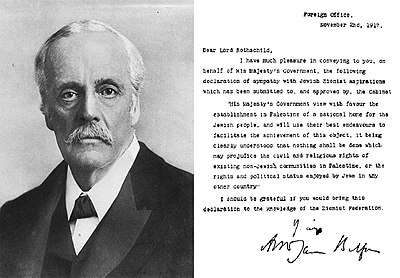

This website was created by Syrian hands🥱😎
I made this website for correct information about palestine😁
Are You Ready? Lets Starting✨

Chapter one 1️⃣ What are the historical evidence of the existence of Palestine and the absence of Israel?
Actually, answering this question is straightforward and common. If you are a Muslim who believes in the Quran, there are verses about the existence of Palestine, such as "And We delivered him and Lot to the land which We had blessed for the worlds." The blessed land is known to be the Levant and Palestine, including the presence of Al-Aqsa Mosque. If you are a Christian, in your Holy Bible, Genesis 34:21 mentions Abraham dwelling in the land of the Palestinians for many days, among other references. If you are Jewish, similar references exist. And if you do not belong to any of these, the evidence you see suffices, such as coins minted in 1927, Napoleon's letter to the "Israelites" in 1799, and the Balfour Declaration after World War I, where Britain promised the Jews the establishment of a state in Palestine, indicating the absence of land for them previously. Let's not forget many other projects, like the Macfadyen Plan for Economic Development in 1949, aimed at resettling Palestinian refugees in Arab countries instead of returning them to Palestine. It was overseen by the US, France, Britain, and Arab countries where the refugees would be resettled. Arab countries rejected this plan as it contradicted Resolution 194, denying refugees the free choice to return to Palestine, ultimately failing. Then came the Johnston Plan from 1953-1955, a project by President Eisenhower's envoy to the Middle East, aimed at settling Palestinians in Jordan. Despite efforts to impose this project, it failed. The Palestinian refugees rejected it during the Palestinian Refugee Conference held in Jerusalem in June 1955, where they stated their refusal to accept any project or idea aimed at resolving the refugee issue, as it did not meet their national demands. Then came the John Foster Dulles project from 1955-1956, which called for settling Palestinian refugees in Arab areas where they were located. Dulles believed it necessary to reclaim more land through irrigation projects and provide stable employment for refugees, with Israel paying compensation. The US primarily financed this. This shows the project aimed to depoliticize the Palestinian issue but ultimately failed, among many others. So, I think this is enough to prove the point, right?😊

The sources: All the stories and documents are here
Details of Napoleon's promise to the Jews
The Balfour Declaration explained
Chapter Two: How did the Jews arrive in Palestine?
The Historical Journey of Jewish Settlement in Palestine
The historical journey of Jewish settlement in Palestine is a complex and contentious topic that spans thousands of years. The connection of the Jewish people to the land of Palestine, the impact of significant Jewish immigration waves on the demographic makeup of the region, and the establishment of the State of Israel are key points of argument. On the other hand, the displacement and dispossession of the Palestinian population, the role of colonialism and imperialism in Jewish settlement, and the ongoing conflict and contested narratives provide a counter-argument perspective.
The historical connection of the Jewish people to the land of Palestine is deeply rooted in history. Jewish presence in the region can be traced back thousands of years, with archaeological evidence supporting this claim. The Hebrew Bible, a central religious text for Jews, mentions the land of Israel as the ancestral homeland of the Jewish people. Moreover, important Jewish cultural and religious sites, such as the Western Wall in Jerusalem, are located in Palestine, further solidifying the historical ties between the Jewish people and the land.
However, the narrative of Jewish settlement in Palestine is also marked by the displacement and dispossession of the Palestinian population. The establishment of the State of Israel in 1948 led to the forced displacement of hundreds of thousands of Palestinians from their homes. Palestinian communities were uprooted, and their lands were confiscated, resulting in a humanitarian crisis that continues to impact generations of Palestinians. The creation of Israel not only altered the demographic makeup of the region but also led to long-standing grievances and unresolved conflicts.
The impact of significant Jewish immigration waves on the demographic makeup of Palestine cannot be overlooked. In the late 19th and 20th centuries, waves of Jewish immigrants arrived in Palestine, leading to a substantial increase in the Jewish population. These immigrants, motivated by various factors such as religious beliefs and political ideologies, played a pivotal role in shaping the demographic composition of the region. Jewish settlement efforts during this period resulted in the establishment of vibrant Jewish communities across Palestine.
On the contrary, the impact of colonialism and imperialism on Jewish settlement in Palestine raises questions about the legitimacy of Jewish presence in the region. Colonial powers, such as Britain, supported Jewish settlement efforts in Palestine as a means to advance their own interests in the Middle East. The Balfour Declaration of 1917, issued by the British government, expressed support for the establishment of a Jewish homeland in Palestine, laying the groundwork for increased Jewish immigration. This support, coupled with colonial policies that marginalized the indigenous Palestinian population, highlights the role of external influences in shaping the trajectory of Jewish settlement.
The establishment of the State of Israel as a culmination of the historical journey of Jewish settlement in Palestine represents a significant milestone in Jewish history. The United Nations partition plan of 1947, which called for the creation of separate Jewish and Arab states in Palestine, paved the way for the establishment of Israel. In 1948, the State of Israel was officially declared, symbolizing the fulfillment of decades of Jewish settlement efforts in Palestine. The establishment of Israel not only provided a homeland for the Jewish people but also served as a testament to their resilience and determination.
Despite the establishment of Israel, the ongoing conflict and contested narratives surrounding the historical journey of Jewish settlement in Palestine continue to fuel tensions and disputes in the region. Different historical narratives exist regarding the Jewish presence in Palestine, with Israeli and Palestinian perspectives often conflicting. The Israeli-Palestinian conflict, rooted in competing claims to the land, has resulted in decades of violence, loss, and suffering for both communities. The contested nature of the historical journey of Jewish settlement underscores the complexities and challenges inherent in the Israeli-Palestinian conflict.
The historical journey of Jewish settlement in Palestine is a multifaceted and deeply divisive issue that encompasses a range of arguments and counter-arguments. While the historical connection of the Jewish people to the land, the impact of immigration waves, and the establishment of Israel highlight the narrative of Jewish settlement, the displacement of Palestinians, the role of colonialism, and the ongoing conflict present contrasting viewpoints. Understanding the complexities of this historical journey is crucial for fostering dialogue, reconciliation, and a just resolution to the Israeli-Palestinian conflict.
Donate😅
The situation in Palestine worsens by the day, so contribute to the joy of the locals even if with a cent
donate Now!😇